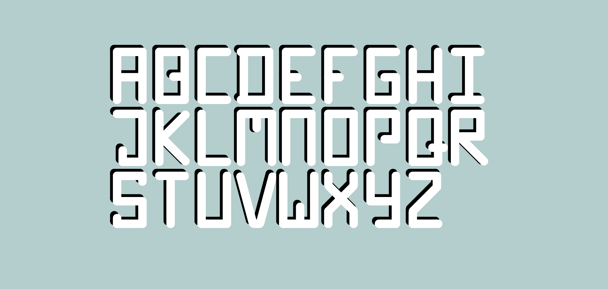

//STYLE
//SCRIPT
HI, BRINNA

Inspired by turtle graphics, I created this little program using p5 javascript library, that generates intricate spiral designs each time it runs. My goal was to create as much variety as I could.
Play with it below! Press any key to refresh.
Click Me!